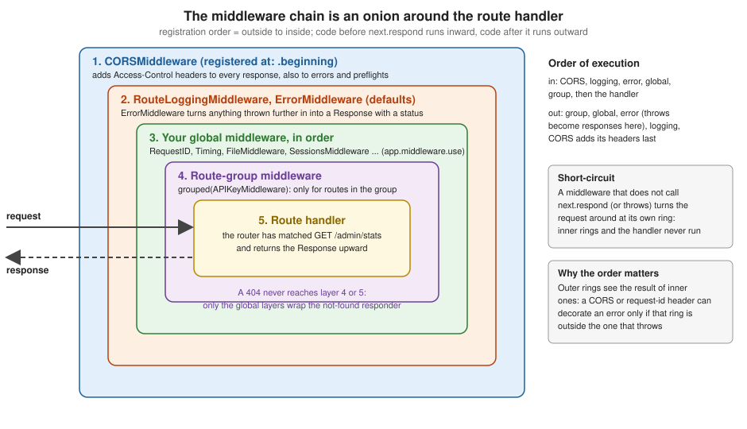

Middleware
|
This content was generated with the assistance of AI and should be verified against the official documentation before being relied on in production. |
This page is written against Vapor 4.122.2 on Swift 6.4 (the package builds in the Swift 6 language mode with tools
version
6.3, as the official template does; Vapor 4.122.2 itself needs tools version 6.0), with swift-nio 2.104.0 and the
swift-crypto version Vapor resolves, checked on 2026-10-17. Every Swift listing on this page was compiled in the Swift 6
language mode with zero warnings in a scratch package, and the behaviour described was verified with a VaporTesting test
suite and with curl against the running service; the output shown is captured from those runs. Vapor 5 is at
5.0.0-beta.4 and is not released yet; where its middleware differs, that is noted. The page extends the Bookshelf
service of the earlier pages. Swift itself is covered by the Swift
Reference,
and async functions, Sendable and actors by Async/Await
and Tasks
and Actors, Isolation and Sendable.
What middleware is
A middleware is a link in a chain of objects that sit between the HTTP server and your route handlers. Each one receives
the
Request and the next Responder in the chain and decides what happens next:
-
run some code, then call the next responder and return its
Responseunchanged (logging, metrics); -
run some code, call the next responder, then modify the
Responseon the way out (adding headers, setting cookies); -
run some code and not call the next responder, returning its own
Responseor throwing an error (authentication failures, maintenance mode, cached answers, redirects); -
catch an error thrown by an inner link and turn it into a
Response(ErrorMiddleware).
Middleware exist for the concerns that apply to many routes at once: cross-origin headers, request IDs, authentication and authorisation guards, rate limits, sessions, compression, static files, error rendering and tracing. Code that only one handler needs belongs in that handler (or in a service it calls), not in middleware.
Where it runs in the request
In the request lifecycle (SwiftNIO accepts the connection and parses HTTP, Vapor builds a Request, the responder chain
runs
the middleware, the router has matched a route, the handler runs, and the returned value is encoded into the
Response), the
middleware chain is the layer around the route. Vapor’s DefaultResponder looks the route up in the router first, then
calls
that route’s pre-built responder: the handler wrapped by every global middleware (in registration order, first
registered outermost) and, inside those, by the middleware of the route’s groups. The same global chain also wraps the
not-found responder, so a request that matches no route still passes through the global middleware but never through
group
middleware.
The result is an onion. A request travels inward through the layers, reaches the handler at the centre, and the response travels outward through the same layers in reverse order.

Middleware and AsyncMiddleware
Vapor defines two protocols in Sources/Vapor/Middleware/Middleware.swift and
Sources/Vapor/Concurrency/AsyncMiddleware.swift:
// Vapor 4.122.2, abridged
@preconcurrency
public protocol Middleware: Sendable {
func respond(to request: Request, chainingTo next: any Responder) -> EventLoopFuture<Response>
}
public protocol AsyncMiddleware: Middleware {
func respond(to request: Request, chainingTo next: any AsyncResponder) async throws -> Response
}Source: Vapor docs: Middleware
Middleware is the original, EventLoopFuture-based protocol. AsyncMiddleware refines it, and a default
implementation of
the future-based requirement wraps your async method, so a type conforming to AsyncMiddleware is also a
Middleware
and can be registered anywhere a Middleware is expected. All new code implements AsyncMiddleware; the
future-based protocol exists for older code and for middleware libraries that have not migrated. Both protocols require
Sendable: one middleware instance serves every request on every event loop thread at the same time.
The one method, respond(to:chainingTo:), has the shape of every middleware:
func respond(to request: Request, chainingTo next: any AsyncResponder) async throws -> Response {
// 1. code that runs on the way in (the request is still unhandled)
let response = try await next.respond(to: request) // 2. hand over to the inner layers
// 3. code that runs on the way out (the response exists)
return response
}Source: Vapor docs: Middleware
The three decisions a middleware makes follow from that shape:
| Decision | How it is written |
|---|---|
Pass through, optionally decorate |
|
Short-circuit with a response |
return a |
Short-circuit with an error |
|
Recover from an error |
|
Two details matter in practice. First, anything the middleware does after next.respond only runs when the inner layers
returned; if they threw, the line after try await next.respond is skipped, and a defer block or a do/catch is
needed to run code in both cases (the request-ID middleware below uses catch). Second, a response’s body may still be
streaming when the middleware sees the Response: headers and status can be changed, but the body is written later by
the
server, so code that measures "time to the last byte" cannot be written in a middleware.
Registering global middleware
app.middleware is a Middlewares value, a list of Middleware stored on the application. Its two members are:
-
use(_ middleware: Middleware, at position: Middlewares.Position = .end), which appends (.end, the default) or prepends (.beginning) a middleware instance; -
resolve(), which returns the array Vapor uses when it builds the responder at startup.
The list is not empty on a new application: the first read of app.middleware creates it with
RouteLoggingMiddleware(logLevel: .info) followed by ErrorMiddleware.default(environment:), so every request is
logged
and every thrown error becomes a response before you add anything. Your registrations come after those two unless you
pass at: .beginning, and the whole list can be replaced with app.middleware = Middlewares() to start from zero.
import Vapor
let orderRecorder = OrderRecorder()
func configure(_ app: Application) async throws {
// 1. Start from the defaults (RouteLoggingMiddleware, then ErrorMiddleware) and add ours.
app.middleware.use(CORSMiddleware(configuration: .init(
allowedOrigin: .any(["https://app.example.com"]),
allowedMethods: [.GET, .POST, .PUT, .PATCH, .DELETE, .OPTIONS],
allowedHeaders: [.accept, .authorization, .contentType, .origin, .xRequestedWith, "X-API-Key"],
allowCredentials: true,
cacheExpiration: 600,
exposedHeaders: [HTTPHeaders.Name("X-Request-ID"), HTTPHeaders.Name("Server-Timing")]
)), at: .beginning)
app.middleware.use(RequestIDMiddleware())
app.middleware.use(RequestTimingMiddleware())
app.middleware.use(FileMiddleware(
publicDirectory: app.directory.publicDirectory,
defaultFile: "index.html",
cachePolicy: .cacheUpToDuration(.minutes(5))
))
// 2. Sessions are optional and need a driver first.
app.sessions.use(.memory)
app.middleware.use(app.sessions.middleware)
try routes(app)
}Source: Vapor docs: Middleware
The chain is composed once, when the application creates its responder at startup: DefaultResponder wraps every route
(and the not-found responder) in the resolved [Middleware] array at that moment. Registering middleware from a request
handler, or after the server has started, has no effect on the running chain. Do all registration in configure.
Ordering
The order of use calls is the order of the layers, outermost first. For the configuration above the effective global
chain, outside to inside, is:
-
CORSMiddleware, because ofat: .beginning -
RouteLoggingMiddleware, a default -
ErrorMiddleware, a default -
RequestIDMiddleware -
RequestTimingMiddleware -
FileMiddleware -
SessionsMiddleware -
the handler
Rules that follow from the onion:
-
ErrorMiddlewaresits near the outside, and anything that can throw must be inside it. A thrownAbortfrom an inner layer is caught by the nearestErrorMiddlewarefurther out and turned into a JSON response with the right status. A middleware outsideErrorMiddlewarethat throws produces an error nobody converts, and the client gets a bare connection-level failure or a generic 500 from the server. That is why the defaults putErrorMiddlewarefirst among the ones you usually add. -
CORSMiddlewaregoes outsideErrorMiddleware. The Vapor source documents this in the CORS middleware’s own comment: insert it before error middleware so that failed responses (a 401, a 500) still carry theAccess-Control-Allow-*headers. If it is inside, the browser reports an opaque CORS failure instead of your 401, which hides the real problem in front-end development. The configuration above achieves it withat: .beginning. -
Decorators go outside the things they decorate. A request ID or correlation header is added by a layer outside the one that can fail, or the error response has no header (the
catchin the request-ID middleware below exists for that reason). -
Authentication before authorisation. A middleware that loads the user (
req.auth.login) must be outside the one that requires the user (GuardMiddleware; see Authentication and Authorization). -
Cheap short-circuits first. A maintenance flag, an IP allow list or a rate limit costs less than a database lookup (a Redis-backed limiter is in Redis & Caching), so register it before the layers that do real work.
-
FileMiddlewareposition decides who pays. Layers outside it (logging, timing, CORS) run for static files too; layers after it (sessions, authentication) are skipped for any request the file middleware answers.
The ordering is observable. This middleware records when it runs, and the test below registers it globally and in a group:
import Vapor
import NIOConcurrencyHelpers
/// Records the order in which middleware run, to make the onion visible in a test.
final class OrderRecorder: Sendable {
private let events = NIOLockedValueBox<[String]>([])
func record(_ event: String) { events.withLockedValue { $0.append(event) } }
var snapshot: [String] { events.withLockedValue { $0 } }
func reset() { events.withLockedValue { $0.removeAll() } }
}
struct TraceMiddleware: AsyncMiddleware {
let name: String
let recorder: OrderRecorder
func respond(to request: Request, chainingTo next: any AsyncResponder) async throws -> Response {
recorder.record("\(name) before")
defer { recorder.record("\(name) after") }
return try await next.respond(to: request)
}
}Source: Vapor docs: Middleware
ORDER: ["global before", "group-A before", "group-B before", "handler", "group-B after", "group-A after", "global after"]That output is from the orderingIsOutsideIn test in the scratch package, which requests a route registered with
app.grouped(TraceMiddleware(name: "group-A", ...), TraceMiddleware(name: "group-B", ...)): the first middleware
passed to grouped is the outer one, exactly as with app.middleware.use.
Route-group middleware
Global middleware applies to every route. Middleware that only some routes need is attached to a group with the
RoutesBuilder methods grouped(_:) and group(_:configure:), each in a variadic form (Middleware...) and an
array
form ([Middleware]). grouped returns a new builder you keep registering routes on; group takes a closure. Both can
be combined with path components, and groups nest.
import Vapor
struct BookDTO: Content {
var id: Int
var title: String
}
struct MissingSecret: Error {
let variable: String
}
func routes(_ app: Application) throws {
app.get("hello") { req async -> String in
"Hello, world! (\(req.correlationID ?? "no id"))"
}
// Group middleware wraps only the routes registered inside the group.
// Production must set BOOKSHELF_API_KEY; development and tests use an obvious placeholder.
let apiKey: String
if let fromEnvironment = Environment.get("BOOKSHELF_API_KEY") {
apiKey = fromEnvironment
} else if app.environment == .production {
throw MissingSecret(variable: "BOOKSHELF_API_KEY")
} else {
apiKey = "change-me-placeholder"
}
let admin = app.grouped("admin").grouped(APIKeyMiddleware(apiKey: apiKey))
admin.get("stats") { req async -> [String: Int] in
["books": 42]
}
let api = app.grouped("api", "v1")
api.get("books") { req async -> [BookDTO] in
[BookDTO(id: 1, title: "Dune")]
}
api.get("boom") { req async throws -> String in
throw Abort(.imATeapot, reason: "short and stout")
}
// Ordering demo
let recorder = orderRecorder
app.middleware.use(TraceMiddleware(name: "global", recorder: recorder))
let traced = app.grouped(TraceMiddleware(name: "group-A", recorder: recorder),
TraceMiddleware(name: "group-B", recorder: recorder))
traced.get("traced") { req async -> String in
recorder.record("handler")
return "done"
}
}(The TraceMiddleware lines at the end belong to the ordering demonstration, not to the Bookshelf API.)
Behind the scenes, grouped returns a MiddlewareGroup that wraps each route’s responder when the route is added:
route.responder = middleware.makeResponder(chainingTo: route.responder). Three consequences:
-
Group middleware is inside every global middleware, always. You cannot make a group middleware run before
CORSMiddleware. -
Nested groups compose outside-in in the order you nest them, and within one
grouped(a, b)callais outsideb. -
Group middleware never sees a 404. When no route matches,
DefaultRespondercalls its not-found responder, which is wrapped by the global middleware only. In the testnotFoundSeesOnlyGlobalMiddleware,GET /noperecords["global before", "global after"]and none of the group traces. The same is true for a method mismatch:POST /hellowhen onlyGET /helloexists answered404 Not Foundin the scratch service, not a 405. So a group-level API-key check still lets an unauthenticated client tell which paths exist (a real path answers 401, an unknown one 404). If that matters, put the check in global middleware and exempt the public paths there.
A rule of thumb that follows: register a middleware globally when it must see every request, including 404s and static files (logging, request IDs, CORS, tracing, compression); register it on a group when it only makes sense for routes that matched (authentication, authorisation, per-API rate limits).
Built-in middleware
Vapor ships these middleware in the Vapor module (Sources/Vapor/Middleware/, Authentication/ and Sessions/):
| Type | What it does | Registration |
|---|---|---|
|
catches errors from inner layers and turns them into a |
default; |
|
logs |
default; |
|
serves files from a public directory, with ETag, range and cache-policy support |
|
|
answers preflight requests and adds |
|
|
loads the session from the cookie and writes the cookie back when |
|
|
creates a server span per request following the OpenTelemetry HTTP semantic conventions |
|
|
overrides the compression setting for the routes it wraps |
|
|
authentication and authorisation guards (the |
group middleware, covered with authentication |
ErrorMiddleware
ErrorMiddleware.default(environment:) maps an error to a response using the error’s own conformances: an AbortError
supplies the status, reason and headers; a DebuggableError supplies a reason and a source location; any other error
becomes a 500 whose reason is Something went wrong. in a release environment and the error’s description otherwise
(so a production build does not leak internals, a development build is easier to debug). It reports the error through
req.logger.report(error:metadata:...) with method, URL and user agent, then encodes the JSON body with the global
JSON
encoder. The 418 from the example above produced exactly this body, captured from the running service:
$ curl -si localhost:8080/api/v1/boom -H 'Origin: https://app.example.com'
HTTP/1.1 418 I'm a teapot
X-Request-ID: 200F86C6-FFB7-46D2-B73A-E57643EA98B8
content-type: application/json; charset=utf-8
content-length: 41
access-control-allow-origin: https://app.example.com
...
{"error":true,"reason":"short and stout"}Source: Vapor docs: Errors
The closure form builds a different error body (for example RFC 9457 Problem Details, or a body the front-end
expects) and is usually registered in place of the default. Replacing the chain, as this snippet shows, means you also
lose the default RouteLoggingMiddleware until you add it back:
/// Replaces the default chain completely, with an ErrorMiddleware of our own.
func replaceDefaultChain(_ app: Application) {
app.middleware = Middlewares()
app.middleware.use(ErrorMiddleware { request, error in
let status: HTTPResponseStatus = (error as? any AbortError)?.status ?? .internalServerError
request.logger.report(error: error)
let body = Response.Body(string: "{\"error\":\"\(status.reasonPhrase)\"}")
var headers = HTTPHeaders()
headers.contentType = .json
return Response(status: status, headers: headers, body: body)
})
}Mapping domain errors, Fluent errors and validation failures onto statuses is the subject of the
Error Handling page.
Note that ErrorMiddleware only converts errors thrown by inner layers; a response with status 500
that was returned is passed through untouched.
FileMiddleware
FileMiddleware(publicDirectory:defaultFile:directoryAction:advancedETagComparison:cachePolicy:) answers a request when
the
path, percent-decoded and with leading slashes removed, names a file below publicDirectory (any path containing ../
is rejected with 403). Otherwise it calls next, which is how a request for /api/v1/books reaches the router.
-
defaultFileis served when the request names a directory (/or/docs/); a value starting with/is relative to the public directory root ("/index.html"is the single-page-app fallback target for the root only). -
directoryAction: .redirectredirects/docsto/docs/(permanent); the default.nonepasses the request on. -
advancedETagComparison: truehashes the file byte by byte (and caches the hash),falsederives the ETag from modification time and size. -
cachePolicyis.browserDefault,.noCache,.cacheUpToDuration(.minutes(5))or.custom(cacheControlHeader:ageHeader:). The example service answeredGET /withcache-control: max-age=300andage: 0using.cacheUpToDuration(.minutes(5)).
The directory is usually app.directory.publicDirectory, which is <working directory>/Public/. A missing working
directory (Xcode’s default, a different cwd under systemd) is the classic reason a file under Public/ returns 404.
The
middleware is not enabled by the generated configure.swift; you add it. Static files and the file I/O API are
developed on the Static Files and File I/O page.
CORSMiddleware
Browsers block a page from reading a response from another origin unless the response says so; CORSMiddleware produces
those headers and answers the OPTIONS preflight itself. The server-side configuration is
CORSMiddleware.Configuration:
| Parameter | Meaning |
|---|---|
|
|
|
|
|
|
|
|
|
|
|
|
CORSMiddleware.Configuration.default() uses .originBased with GET, POST, PUT, OPTIONS, DELETE, PATCH and the
headers
Accept, Authorization, Content-Type, Origin, X-Requested-With. Origin-based echoing with allowCredentials: true
allows
every site to make credentialed requests; for a real API use .any([...]) with your front-end origins. Requests
without
an Origin header (curl, server-to-server) pass straight through, so a CORS configuration is not an access control. The
preflight captured from the service above:
$ curl -si -X OPTIONS localhost:8080/api/v1/books \
-H 'Origin: https://app.example.com' -H 'Access-Control-Request-Method: POST'
HTTP/1.1 200 OK
content-length: 0
access-control-allow-origin: https://app.example.com
access-control-allow-headers: accept, authorization, content-type, origin, x-requested-with, x-api-key
access-control-allow-methods: GET, POST, PUT, PATCH, DELETE, OPTIONS
access-control-expose-headers: x-request-id, server-timing
access-control-max-age: 600
access-control-allow-credentials: trueThe exposedHeaders: parameter takes [HTTPHeaders.Name] in 4.122; an older overload that took [String] is
deprecated
and produces a deprecation warning, which is why the listing writes HTTPHeaders.Name("X-Request-ID"). The concept of
CORS
itself, browser behaviour and the failure modes are covered in CORS.
Sessions
app.sessions.middleware returns a SessionsMiddleware bound to the configured driver. It must be registered, and a
driver chosen first (app.sessions.use(.memory) in the listing above; .memory is lost on restart and is per process,
so it is for development only). It reads the session cookie (vapor-session by default, from
app.sessions.configuration), restores the session if the store knows the id, and after the inner layers finish writes
the cookie if req.session was touched. Calling app.sessions.middleware without a driver crashes at startup with the
message No driver configured. Configure with app.sessions.use(...). The default SessionsConfiguration.default()
cookie is valid for one week, SameSite=Lax, with neither Secure nor HttpOnly
set; production services replace cookieFactory to set both. Redis and Fluent-backed stores belong with
Sessions and Cookies and
Session Authentication and Web Login (see also
Security Hardening); the registration order rule is that the middleware must
come before any authenticator that uses the session.
Logging, tracing and compression
RouteLoggingMiddleware is already in the default chain (see Logging); a second
instance only makes sense with a different level.
TracingMiddleware is an AsyncMiddleware that extracts the incoming trace context from the request headers, starts a
server span named after the route (vapor_route_undefined when no route matched), sets the OpenTelemetry HTTP
attributes
(http.request.method, url.path, http.route, http.response.status_code and more), marks 5xx responses as errors
and
exposes the span’s context as req.serviceContext while the request runs. It produces data only when a tracing backend
is bootstrapped with swift-distributed-tracing (for example through swift-otel). Register it near the outside, so the
span
covers the other layers; a group-level registration with an ErrorMiddleware inside it keeps the status code on the
span and leaves health probes untraced, as shown on
Tracing, Metrics & OpenTelemetry. setCustomAttributes runs
on every request and must be cheap.
ResponseCompressionMiddleware does not compress anything itself. It sets the HTTPHeaders.ResponseCompression
preference (.enable, .disable, .useDefault) that the server’s own compression configuration consults, and only
when
allowRequestOverrides is enabled in that configuration. Wrap routes with
app.grouped("downloads").responseCompression(.disable)
for already-compressed payloads.
import Vapor
import Tracing
func builtInMiddlewareExamples(_ app: Application) {
// Log at debug level instead of info (replaces nothing: the default one still exists).
app.middleware.use(RouteLoggingMiddleware(logLevel: .debug))
// Redirect /docs to /docs/ when a directory with that name exists, and cache for an hour.
app.middleware.use(FileMiddleware(
publicDirectory: app.directory.publicDirectory,
defaultFile: "index.html",
directoryAction: .redirect,
advancedETagComparison: false,
cachePolicy: .cacheUpToDuration(.hours(1))
))
// OpenTelemetry-style server spans (needs a bootstrapped swift-distributed-tracing backend).
app.middleware.use(TracingMiddleware { attributes, request in
attributes["bookshelf.tenant"] = request.headers.first(name: "X-Tenant") ?? "none"
})
// Route-level override of the response compression setting.
let downloads = app.grouped("downloads").grouped(ResponseCompressionMiddleware(override: .disable))
downloads.get("archive") { _ async -> String in "already compressed" }
// The same thing through the RoutesBuilder helper.
app.grouped("exports").responseCompression(.enable).get("books.csv") { _ async -> String in "id,title" }
}The listing above was compiled, not run: the tracing middleware needs a backend and the file middleware a populated
public directory. The import Tracing line comes from swift-distributed-tracing, which Vapor depends on; declare
.product(name: "Tracing", package: "swift-distributed-tracing") in your own manifest rather than relying on the
transitive dependency.
Writing custom middleware
The recipe is the same each time: a struct (or final class) conforming to AsyncMiddleware, with let properties
for
configuration, one respond method, and registration in configure.
Request timing
import Vapor
/// Adds a `Server-Timing` header with the time spent in the rest of the chain.
struct RequestTimingMiddleware: AsyncMiddleware {
func respond(to request: Request, chainingTo next: any AsyncResponder) async throws -> Response {
let clock = ContinuousClock()
let start = clock.now
let response = try await next.respond(to: request)
let elapsed = start.duration(to: clock.now)
let milliseconds = Double(elapsed.components.seconds) * 1000
+ Double(elapsed.components.attoseconds) / 1_000_000_000_000_000
response.headers.replaceOrAdd(
name: "Server-Timing",
value: "app;dur=\(String(format: "%.2f", milliseconds))"
)
return response
}
}Source: Vapor docs: Middleware
It measures with ContinuousClock (monotonic, unlike Date) and reports with the standard Server-Timing header,
which
browser developer tools display. The captured response of GET /hello shows Server-Timing: app;dur=0.58. Two caveats
from the structure of a middleware: the header appears only on responses that were returned, so the 401 and 418
responses
above have none (the error was thrown through this layer; a defer or do/catch is needed to decorate error paths),
and the duration ends when the handler returns, not when the body has been written to the socket.
Request IDs
Vapor already gives every Request a logger with a request-id metadata value, taken from the X-Request-Id request
header when present and a fresh UUID otherwise. What it does not do is echo the id on the response, bound the length and
character set of an id supplied by a client, or let handlers read the id. The middleware below does those:
import Vapor
/// Reuses an incoming `X-Request-ID` (when it looks safe) or creates one, adds it to the
/// request logger and echoes it on the response, also when a later error is thrown.
struct RequestIDMiddleware: AsyncMiddleware {
static let headerName = "X-Request-ID"
func respond(to request: Request, chainingTo next: any AsyncResponder) async throws -> Response {
let incoming = request.headers.first(name: Self.headerName)
let id = incoming.flatMap(Self.sanitized) ?? UUID().uuidString
request.logger[metadataKey: "correlation-id"] = .string(id)
request.storage[CorrelationIDKey.self] = id
do {
let response = try await next.respond(to: request)
response.headers.replaceOrAdd(name: Self.headerName, value: id)
return response
} catch let abort as any AbortError {
// Re-throw with the header added, so ErrorMiddleware (further out) keeps it.
var headers = abort.headers
headers.replaceOrAdd(name: Self.headerName, value: id)
throw Abort(abort.status, headers: headers, reason: abort.reason)
}
}
/// Accepts 8...64 characters of letters, digits, `-` and `_` only (no log injection).
private static func sanitized(_ value: String) -> String? {
let allowed = CharacterSet.alphanumerics.union(CharacterSet(charactersIn: "-_"))
guard (8...64).contains(value.count),
value.unicodeScalars.allSatisfy(allowed.contains) else { return nil }
return value
}
}
struct CorrelationIDKey: StorageKey {
typealias Value = String
}
extension Request {
/// The correlation id stored by `RequestIDMiddleware`, if it ran.
var correlationID: String? {
storage[CorrelationIDKey.self]
}
}Source: Vapor docs: Logging
-
An incoming
X-Request-IDis accepted only when it is 8 to 64 letters, digits,-or_; anything else (spaces, CR/LF, very long strings) is replaced, which prevents log injection and header smuggling through the id. -
The id goes into
request.logger[metadataKey:], so every log line of the request carriescorrelation-id, and intorequest.storagebehind aStorageKey, soreq.correlationIDis available to handlers and later middleware. -
The
catchbranch re-throws anAbortwith the header added, soErrorMiddleware(further out) putsX-Request-IDon the 401 and 418 responses too. Errors that are notAbortErrorpass up without the header; for those either also map them here or move the header assignment into a customErrorMiddlewareclosure.
The captured responses show both paths (X-Request-ID: bookshelf-0001 accepted, a UUID created for the request without
one):
$ curl -si localhost:8080/hello -H 'X-Request-ID: bookshelf-0001'
HTTP/1.1 200 OK
content-type: text/plain; charset=utf-8
content-length: 30
Server-Timing: app;dur=0.58
X-Request-ID: bookshelf-0001
Hello, world! (bookshelf-0001)A request ID is a correlation aid, not a credential: never trust it for authorisation.
API-key check with a constant-time comparison
Machine-to-machine endpoints are often protected with a shared key in a header. Comparing the strings with == stops at
the first differing byte, which in principle lets an attacker who can measure response times learn the key one character
at
a time. The middleware below compares fixed-length SHA-256 digests of the provided and the expected key and examines
every
byte of both before deciding:
import Vapor
/// Protects a route group with a shared API key sent in `X-API-Key`.
struct APIKeyMiddleware: AsyncMiddleware {
private let expectedDigest: SHA256.Digest
/// - Parameter apiKey: the expected key; read it from the environment, never hard-code it.
init(apiKey: String) {
self.expectedDigest = SHA256.hash(data: Data(apiKey.utf8))
}
func respond(to request: Request, chainingTo next: any AsyncResponder) async throws -> Response {
guard let provided = request.headers.first(name: "X-API-Key") else {
throw Abort(.unauthorized, reason: "Missing API key.")
}
// Hash both sides so the comparison runs over equal-length values, then compare
// every byte without returning early.
let providedDigest = SHA256.hash(data: Data(provided.utf8))
guard Self.constantTimeEqual(providedDigest, expectedDigest) else {
throw Abort(.unauthorized, reason: "Invalid API key.")
}
return try await next.respond(to: request)
}
private static func constantTimeEqual(_ lhs: SHA256.Digest, _ rhs: SHA256.Digest) -> Bool {
var difference: UInt8 = 0
for (a, b) in zip(lhs, rhs) {
difference |= a ^ b
}
return difference == 0
}
}Source: Vapor docs: Middleware
Notes on this implementation:
-
Hashing both sides first gives two values of equal length, so the comparison does not leak the length of the real key, and the
|=accumulation means the loop does not return at the first mismatch. -
The key is a constructor argument; read it from the environment (
Environment.get("BOOKSHELF_API_KEY")) inroutesand never commit a real one. Thechange-me-placeholderin the listing ofroutes.swiftis a visible placeholder for local runs and tests, not a default for deployment:routesthrows at startup when the variable is missing in production. -
Constant-time behaviour of Swift code is best effort: the optimiser and the platform are not guaranteed to preserve it. Treat it as defence in depth next to TLS, key rotation and rate limiting. For anything beyond a shared secret between your own services, use the authentication features (bearer tokens, JWT) rather than a hand-rolled key.
-
The middleware throws
Abort(.unauthorized), so the response comes fromErrorMiddleware. AWWW-Authenticateheader can be added through theheaders:parameter ofAbort. -
Books and tutorials for early Vapor 4 frequently show a key check as
guard req.headers["X-API-Key"].first == key(a plain==and futures); that works, but the version above is the one to copy today. The Kodeco middleware chapter was consulted for concept coverage only; this page’s code is original and written for Vapor 4.122.
The captured behaviour:
$ curl -si localhost:8080/admin/stats
HTTP/1.1 401 Unauthorized
X-Request-ID: F124ACAD-5EA5-425E-8758-3088842835B9
content-type: application/json; charset=utf-8
{"error":true,"reason":"Missing API key."}
$ curl -si localhost:8080/admin/stats -H 'X-API-Key: change-me-placeholder'
HTTP/1.1 200 OK
content-type: application/json; charset=utf-8
Server-Timing: app;dur=0.77
X-Request-ID: F2463091-E956-4C59-B7D8-9E4D8F6A972F
{"books":42}Short-circuiting: a maintenance switch
A middleware that never calls next stops the request at its own ring. This one answers 503 with Retry-After while a
flag is set; the closure is @Sendable because the middleware must be:
import Vapor
/// Short-circuits every request with 503 while a flag is set; the handler never runs.
struct MaintenanceMiddleware: AsyncMiddleware {
let isEnabled: @Sendable () -> Bool
func respond(to request: Request, chainingTo next: any AsyncResponder) async throws -> Response {
guard !isEnabled() else {
var headers = HTTPHeaders()
headers.replaceOrAdd(name: .retryAfter, value: "120")
throw Abort(.serviceUnavailable, headers: headers, reason: "Down for maintenance.")
}
return try await next.respond(to: request)
}
}Source: Vapor docs: Middleware
Register it inside ErrorMiddleware (the default position after the two defaults). Registered with at: .beginning,
outside
ErrorMiddleware, the thrown Abort is not converted and the server closes the connection without a response, as noted
in the ordering section. If you want it outside, build and return a Response instead of throwing.
Middleware with state and Swift 6
A middleware is created once and shared across all requests and all event loops, and both protocols require Sendable.
Under the Swift 6 language mode the compiler enforces that:
-
a
structwith onlyletproperties ofSendabletypes (as all the examples above) is automaticallySendable; -
a
final classneeds immutable (let)Sendablestored properties, or@unchecked Sendablewith its own locking, which you must then be able to justify; -
a mutable
varstored in the middleware is a compile error (stored property 'x' of 'Sendable'-conforming struct has non-Sendable typeor a mutation of a captured variable from a@Sendableclosure); the cure is anactor, aNIOLockedValueBox, or storing per-request data inrequest.storageinstead.
/// Per-process mutable state in a middleware: keep it in an actor so the middleware stays Sendable.
actor RequestCounter {
private var total = 0
func increment() -> Int {
total += 1
return total
}
}
struct CountingMiddleware: AsyncMiddleware {
let counter = RequestCounter()
func respond(to request: Request, chainingTo next: any AsyncResponder) async throws -> Response {
let count = await counter.increment()
let response = try await next.respond(to: request)
response.headers.replaceOrAdd(name: "X-Request-Count", value: String(count))
return response
}
}Source: Vapor docs: Middleware
The actor serialises the increments, and the await inside respond is fine because AsyncMiddleware.respond is
async. Per-request state (a start time, a request id, the authenticated user) does not belong in the middleware at
all: use local variables in respond, request.storage or request.auth. For middleware that holds long-lived
resources (a rate-limit store, an HTTP client), take the resource through the initializer from app and keep it in a
let.
Build one group once and share it when several controllers need the same stack:
/// A group built once and reused by several controllers.
func protectedRoutes(_ app: Application, apiKey: String) -> any RoutesBuilder {
app.grouped("internal")
.grouped(RequestTimingMiddleware(), APIKeyMiddleware(apiKey: apiKey))
}Testing middleware
See Testing for the general setup. Use VaporTesting and app.testing().test(...),
which runs the full chain in-process, so the test exercises ordering,
short-circuits and headers exactly as production would, without a socket. The suite in the scratch package follows this
shape for every behaviour shown on this page:
import VaporTesting
import Testing
@testable import App
@Suite(.serialized) struct MiddlewareTests {
func withApp(_ body: (Application) async throws -> Void) async throws {
let app = try await Application.make(.testing)
do {
try await configure(app)
try await body(app)
} catch {
try await app.asyncShutdown()
throw error
}
try await app.asyncShutdown()
}
@Test func apiKeyGuardsOnlyTheGroup() async throws {
try await withApp { app in
try await app.testing().test(.GET, "admin/stats") { res async in
#expect(res.status == .unauthorized)
}
try await app.testing().test(.GET, "admin/stats", headers: ["X-API-Key": "change-me-placeholder"]) { res async in
#expect(res.status == .ok)
}
try await app.testing().test(.GET, "api/v1/books") { res async in
#expect(res.status == .ok)
}
}
}
}Source: Vapor docs: Testing
Ordering tests record events in a Sendable collector, as the OrderRecorder above does. Test a middleware in
isolation
by mounting it on a throwaway route of a fresh Application, not by calling respond directly, because building a
Request and an AsyncResponder by hand ties the test to Vapor internals.
Common errors and pitfalls
| Symptom | Cause | Fix |
|---|---|---|
The browser shows a CORS error instead of the real 401 or 500 |
|
register it with |
Preflight fails for a custom header |
the header is missing from |
add it ( |
Cookies are not sent cross-origin |
|
use |
A header added after |
the error was thrown through the middleware, so the code after |
use |
The server closes the connection with no response ( |
a middleware outside |
keep throwing middleware inside the error middleware, or return a |
|
|
register it; set the working directory in the Xcode scheme or the service unit |
Group middleware does not run for unknown URLs |
group middleware wraps only matched routes |
use global middleware for checks that must see every request |
|
|
call |
Middleware registered in a handler or after startup has no effect |
the chain is composed once at startup |
register in |
Swift 6 error about non- |
middleware must be |
immutable properties, an actor, or |
Both |
ambiguous intent; |
implement only the async method |
Timing or compression looks wrong for streamed bodies |
the middleware sees headers before the body is written |
do not measure or modify bodies in middleware; wrap the body stream in the handler |
Version notes and outdated material
-
The
Middlewareprotocol,app.middleware.useandgroupedare the Vapor 4 API. Withat: .beginningavailable, the older idiom of assigningapp.middleware = Middlewares()and re-addingErrorMiddlewareby hand just to get a middleware first is not needed. -
AsyncMiddlewarewas added to Vapor 4 withasync/awaitsupport; books written for Vapor 3 or early Vapor 4 showrespond(to:chainingTo:)returning a future (Future<Response>in Vapor 3,EventLoopFuture<Response>in Vapor 4), and Vapor 3 registered middleware throughMiddlewareConfigandservices.register(...)inconfigure(_:_:_:), which no longer exists. -
FileMiddleware(publicDirectory:)alone is the older form shown in early Vapor 4 material; the current initializer addsdefaultFile,directoryAction,advancedETagComparisonandcachePolicy. -
CORSMiddleware.Configuration.inittakingexposedHeaders: [String]is deprecated in 4.122 in favour of[HTTPHeaders.Name]. -
Swift 6 language mode makes the
Sendablerequirement a compile-time error where the Swift 5 mode printed a warning or nothing; books from the Swift 5 era (including the ones consulted) never mention it. -
TracingMiddlewareandreq.serviceContextare recent additions tied to swift-distributed-tracing; older material usesswift-metricsandswift-logonly. -
Vapor 5 (5.0.0-beta.4, not released) is a major version that changes some APIs; this page’s code targets 4.122.x. Review the Vapor 5 upgrade notes before moving; the register-and-wrap model (global, grouped, outside-in order) is the concept to keep, but exact signatures were not verified for this page.